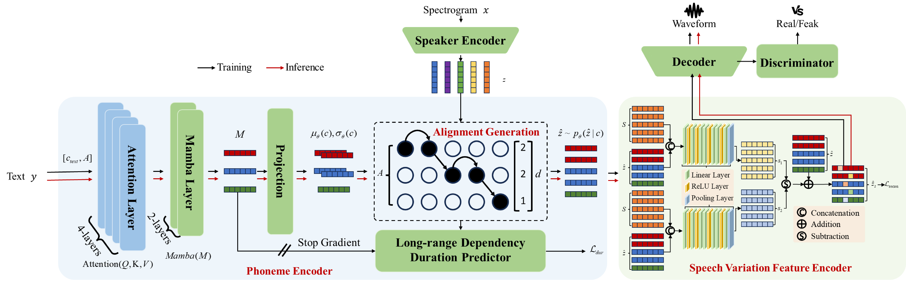
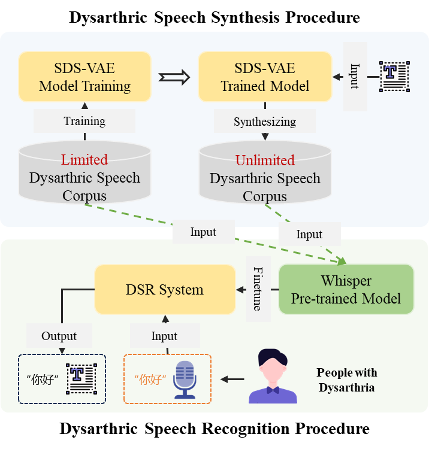

Synthesizing personalized features of dysarthric speech to enhance dysarthric speech recognition
Authors: Daipeng Zhang, Wenhuan Lu, Jianguo Wei, Wei Li, Jinghong Wang
Abstract:
Dysarthric Speech Recognition (DSR) systems play a crucial role in facilitating communication for individuals with speech disorders. These individuals often have physical disabilities and exhibit highly individualized speech signals, which presents significant challenges for large-scale data collection and annotation in the development of DSR systems. To address these challenges, we propose a novel approach to enhance the recognition capabilities of DSR systems by synthesizing speech that incorporates personalized features characteristic of dysarthria. Our method begins by estimating the long-range dependency distribution of speech signal duration based on the conditional input text, thereby capturing the long-range dependency features unique to dysarthric speech. Next, we draw inspiration from image style transfer techniques to develop a speech variation feature encoder designed to capture the variability inherent in dysarthric speech. Additionally, we introduce a pre-trained speaker encoder capable of capturing the speech features of the target speaker using only a limited amount of the target speaker's speech for fine-tuning. Finally, the synthesized speech is used to fine-tune the pre-trained ASR model to enhance its ability to recognize dysarthric speech. Experimental results show that our method outperforms the best publicly available TTS system and achieves a MOS comparable to ground truth, while, at the same time, significantly improving the expressive power of the DSR system.
Illustration of the overall framework of SDS-VAE, and DSR System Pipeline.

Illustration of the overall framework of SDS-VAE, encompassing components a phoneme encoder, a long-range dependency duration predictor (LDDP), a speech variation feature encoder (SVF), a pre-trained speaker encoder, a decoder, and a discriminator.

Adaptive DSR System Pipeline.